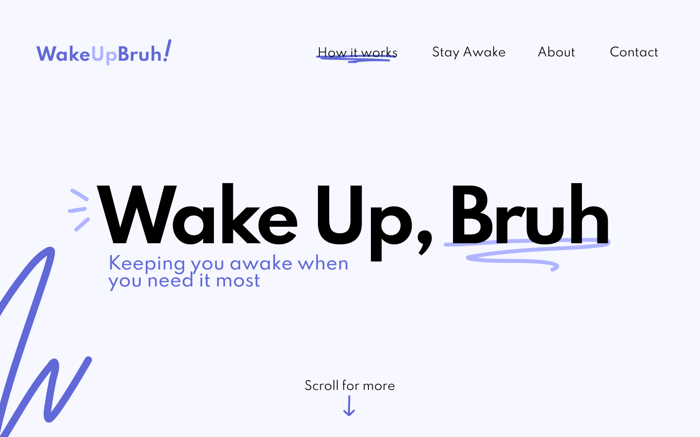

😴 "What if there was a program that could detect when we were falling asleep and keep us in check?"
Front-end, Designer
I worked on the front-end through React (it was my first time working with it at a hackathon!), and the some functions that triggered sounds and alerts that appeared on the screen.
36 hours
My project partner and I started falling asleep on our desks when listening to lectures remotely. We realized a lot of our friends had this problem too, and wanted to build a solution as a project.
We created a website that detects when you're feeling tired and notify you, telling you to "wake up, bruh!" Whether you’re falling asleep at a really boring meeting, or you’re trying to drive late at night, WakeUpBruh works to keep you awake when you need it most.
Mockups I designed for the project!
I designed a couple of mockups for the project prior to development. Since the project was sillier than other projects I worked on, I wanted it to have a playful and youthful feel, hence the scribbles as part of the design. Despite this, I wanted the project to still look polished to some extent, so I worked a sans serif font into the design. We picked purple to use for the overall style of the project because we associated the color with sleeping.
We settled on using React as a front-end framework. We believed that building a project with react would work best with the back-end of the project, and also wanted to try using a framework that we weren’t too familiar with. We picked up Tensorflow.js because of its face recognition library, and because we believed it would be easier to use than an API.
Detecting how open eyes were
In order to create a sleepiness detecting web app, we implemented facemesh.js in order to retrieve
face landmarks, or key points that each map onto your facial features. Using these landmarks, we
calculated the Euclidean distance between multiple coordinates in the upper and lower eyelids and
averaged the results between two eyes. This gave us a number that would indicate how open someone’s
eyes are.
From this, we set a threshold on how open one’s eyes would need to be in order to be
determined as sleepy, and made a set amount of time before the program would tell them to wake up.
This set amount of time was used in order to account for blinking. Meeting the time condition would
indicate that the user is tired, and the user would be warned to wake up through alerts.
I became comfortable with using React and deploying projects through working on WakeUpBruh. I also learned more about the functions of Git by working on this project.
The seventh iteration of SB Hacks, UC Santa Barbara’s collegiate hackathon.
CSS, Figma, Git, Github, HTML, JavaScript, node.js, React, Tensorflow.js
You can check out the code of the project, check out our pitch , and demo it .